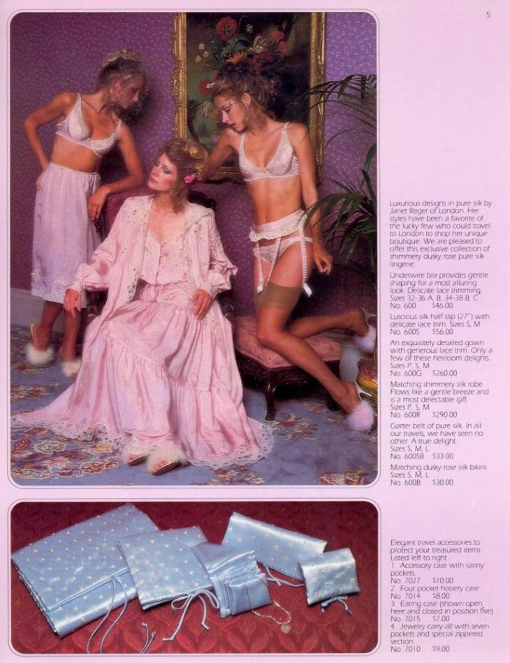
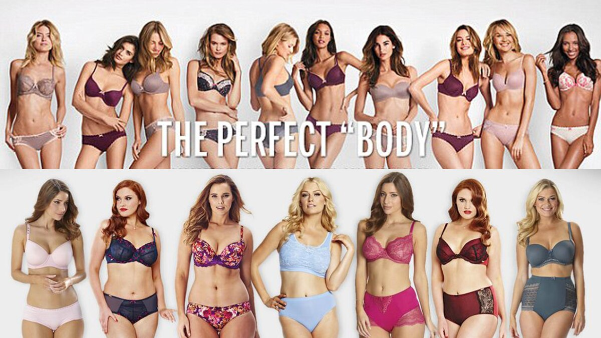
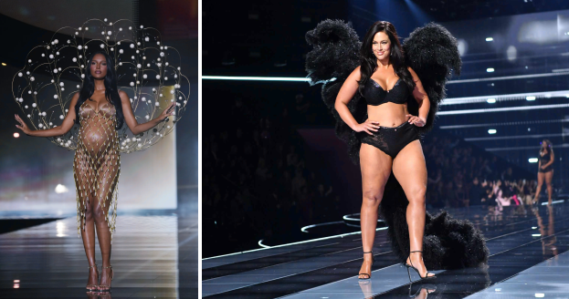

Entre alas y filtros: Cómo los desfiles de Victoria's Secret y las redes sociales redefinen los estereotipos femeninos
En este texto, se utilizará el desfile de Victoria’s Secret como un símbolo histórico de los estándares de belleza: aquello que representaban antes, que fueron queriendo transmitir, cómo se consumía y cómo se consume hoy en día, influencias, los cuestionamientos que la sociedad tuvo (o no) a medida que pasó el tiempo.
Victoria’s Secret nació el 12 de junio de 1977 en California. En ese entonces, la marca, las revistas de moda y las publicidades de la misma llegaron a representar un ideal de belleza casi imposible: cuerpos muy delgados, altos, curvas marcadas de forma muy específica y natural, la piel bronceada, sin imperfecciones visibles, sin vellos y muchas otras características específicas. Era la fantasía de lo que las personas entendían por “sexy” sin llegar a ser vulgar. En ese entonces, celebridades como Adriana Lima representaban a la perfección este ideal y eran el ejemplo a seguir para todas las jóvenes del momento.

Imágen de las publicidades de la marca en 1977
La sociedad y los medios de comunicación como las redes sociales reforzaban estos estereotipos. Los programas de televisión, videos de las pasarelas, series juveniles, revistas, desfiles de moda, eran todas acciones que contribuyeron a que este ideal se volviera cada vez algo “natural” y lo que “se esperaba” para que una mujer sea considerada linda, reconocida y hasta deseada.
De todas formas, este ideal no estuvo libre de quejas. Hacia finales de los 90 y principios de los 2000, comenzaron a surgir las primeras críticas: periodistas, terapeutas y movimientos feministas iniciaron a denunciar los daños que implicaba intentar alcanzar estos estándares corporales imposibles (desde la baja autoestima, hasta trastornos alimenticios, entre otros efectos negativos).
En 2014, una campaña de publicidad bajo la frase “El cuerpo perfecto” causó una indignación masiva: miles de personas pedían disculpas a la marca por promover estos estándares de belleza “poco realistas” que generaban inseguridades y autoexigencia en mujeres cotidianamente. También se cuestionaba esto que se viene mencionando a lo largo del texto, que las modelos tuvieran que ajustarse a reglas extremadamente rígidas. No solo delgadez, sino también altura, proporciones corporales, ausencia de manchas, entre otras.
Finalmente, se abrió otro tipo de debate más allá de lo mencionado hasta ahora. Esta fue la exposición de cómo estos ideales excluían cuerpos mayores, mujeres con curvas reales, distintas etnias, identidades de género diversas, convirtiéndose no solo en un ideal estético y aspiracional sino en un llamado al malestar para quienes no se identifican con ellos.

Imágen de la campaña “The perfect body”
En respuesta y con el paso del tiempo, Victoria's Secret, junto a muchas otras marcas, está intentando adaptarse a las demandas de inclusión y diversidad, incorporando modelos de diferentes tallas, etnias y edades. Esto se puede apreciar en su último desfile de moda que se realizó en Nueva York, el día 15 de octubre del 2025. De todas formas, estas iniciativas son percibidas como estrategias de marketing superficial, sin un compromiso real con el cambio.

Imágenes de la pasarela de victoria secret 2025
A su vez, hoy en día, las redes sociales amplifican estos estándares de belleza mostrando imágenes editadas, cuerpos posando, ángulos que no muestran aquello “imperfecto”. Aunque no se deba apartar a un costado las numerosas voces de influencers de diversas características físicas que son una gran representación, la predominancia de ciertos estereotipos sigue siendo evidente.
En conclusión, aunque haya habido avances hacia una representación más inclusiva de la belleza, los estereotipos siguen estando presentes y son reforzados constantemente por las marcas, publicidades y redes sociales, entre otros medios. Es esencial continuar cuestionando estos mismos ideales y promover una visión más diversa y realista de la belleza, que celebre las diferencias y la aceptación personal.